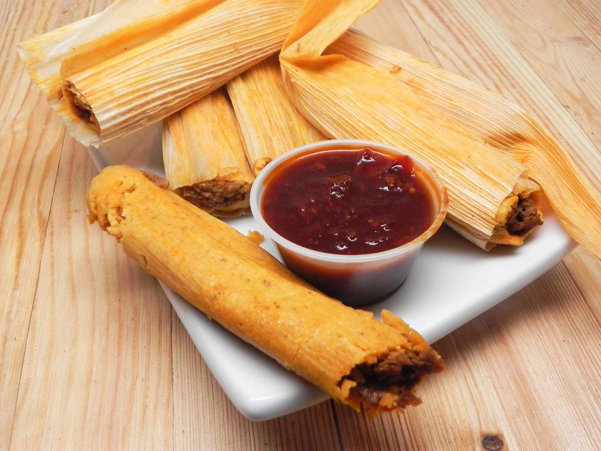

Tamales are always the best thing in the mornings
Description
These tamales are delicious! I have been looking for a good tamales
recipe for years. One day I went to the international market and stood
in the Mexican aisle until a woman with a full cart came by. I just
asked her if she knew how to make tamales. This is her recipe with a few
additions from me! This is great served with refried beans and a salad.
Ingredient
1 ¼ pork loin
1 large onion, halved
1 clove garlic
4 dried chilli peppers
2 cups water
1 ½ teaspoon salt
1 (8 ounce) package dried corn husks
⅔ cup lard
1 (10.5 ounce) can beef broth, or as needed
2 cups masa harina
1 teaspoon baking powder
½ teaspoon salt
1 cup sour cream
Steps
Make the filling: place pork, onion and garlic in a Dutch oven. Add enough water to cover and bring to a boil. Reduce heat ot low and simmer until pork is cooked through, about 2 hours.
Meanwhile make a chili sauce: user rubber gloves to remove stems and seeds from chiles. Place chiles in a saucepan with 2 cups of water. Simmer uncovered, for 20 minutes. Remove from heat and cool.
Transfer chiles and cooking water t a blender and blend until smooth. Strain mixture into a bowl and stir in salt. Set aside.
Shred cooked pork and mix in 1 cup of chili sauce. Reserve remaining sauce for serving
Prepare husks and dough: soak corn husks in a bowl of warm watter until softened, abound 30 minutes
While husks are soaking, beat lard with 1 tablesoon broth until fluffy. Combine masa harina, baking powder, and salt in a separate bowl; stir into the lard mixture, adding more broth as needed to form a spongy dough.
Remove husks from water and pat dry. Spread dough out over husks to ¼ to ½ inch thick
Place 1 tablespoon of pork filling over center of each. Fold the sides, top and bottom of each husk in toward the center to enclose dough.
Arrange tamales in steamer basket. Place over simmering water and steam for 1 hour.
Remove tamales from husks. Drizzle with remaining chile sauces and top with sour cream, or mix sour cream into the chile sauce first, for creamy sauce.